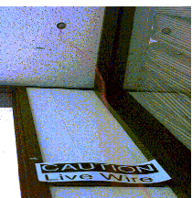
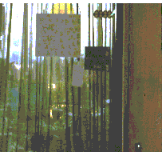

Mark Weiser and John Seely Brown
Xerox PARC
December 21, 1995
Bits flowing through the wires of a computer network are ordinarily
invisible. But a radically new tool shows those bits through motion,
sound, and even touch. It communicates both light and heavy network
traffic. Its output is so beautifully integrated with human information
processing that one does not even need to be looking at it or
near it to take advantage of its peripheral clues. It takes no
space on your existing computer screen, and in fact does not use
or contain a computer at all. It uses no software, only a few
dollars in hardware, and can be shared by many people at the same
time. It is called the "Dangling String".

Created by artist Natalie Jeremijenko, the "Dangling String"
is an 8 foot piece of plastic spaghetti that hangs from a small
electric motor mounted in the ceiling. The motor is electrically
connected to a nearby Ethernet cable, so that each bit of information
that goes past causes a tiny twitch of the motor. A very busy
network causes a madly whirling string with a characteristic noise;
a quiet network causes only a small twitch every few seconds.
Placed in an unused corner of a hallway, the long string is visible
and audible from many offices without being obtrusive. It is
fun and useful. The Dangling String meets a key challenge in
technology design for the next decade: how to create calm technology.
We have struggled for some time to understand the design of calm technology, and our thoughts are still incomplete and perhaps even a bit confused. Nonetheless, we believe that calm technology may be the most important design problem of the twenty-first century, and it is time to begin the dialogue.
Designs that encalm and inform meet two human needs not usually
met together. Information technology is more often the enemy of
calm. Pagers, cellphones, newservices, the World-Wide-Web, email,
TV, and radio bombard us frenetically. Can we really look to technology
itself for a solution?
But some technology does lead to true calm and comfort. There
is no less technology involved in a comfortable pair of shoes,
in a fine writing pen, or in delivering the New York Times on
a Sunday morning, than in a home PC. Why is one often enraging,
the others frequently encalming? We believe the difference is
in how they engage our attention. Calm technology engages both
the center and the periphery of our attention, and
in fact moves back and forth between the two.
We use "periphery" to name what we are attuned to without attending to explicitly. Ordinarily when driving our attention is centered on the road, the radio, our passenger, but not the noise of the engine. But an unusual noise is noticed immediately, showing that we were attuned to the noise in the periphery, and could come quickly to attend to it.
It should be clear that what we mean by the periphery is anything
but on the fringe or unimportant. What is in the periphery at
one moment may in the next moment come to be at the center of
our attention and so be crucial. The same physical form may even
have elements in both the center and periphery. The ink that
communicates the central words of a text also, though choice of
font and layout, peripherally clues us into the genre of the text.
A calm technology will move easily from the periphery of our attention,
to the center, and back. This is fundamentally encalming, for
two reasons.
First, by placing things in the periphery we are able to attune
to many more things than we could if everything had to be at the
center. Things in the periphery are attuned to by the large portion
of our brains devoted to peripheral (sensory) processing. Thus
the periphery is informing without overburdening.
Second, by recentering something formerly in the periphery we
take control of it. Peripherally we may become aware that something
is not quite right, as when awkward sentences leave a reader tired
and discomforted without knowing why. By moving sentence construction
from periphery to center we are empowered to act, either by finding
better literature or accepting the source of the unease and continuing.
Without centering the periphery might be a source of frantic following
of fashion; with centering the periphery is a fundamental enabler
of calm through increased awareness and power.
Not all technology need be calm. A calm videogame would get little
use; the point is to be excited. But too much design focuses
on the object itself and its surface features without regard for
context. We must learn to design for the periphery so that we
can most fully command technology without being dominated by it.
Our notion of technology in the periphery is related to the notion of affordances, due to Gibson by popularized by Norman. An affordance is a relationship between an object in the world and the intentions, perceptions, and capabilities of a person. The side of a door that only pushes out affords this action by offering a flat pushplate. The idea of affordance, powerful as it is, tends to describe the surface of a design. For us the term "affordance" does not reach far enough into the periphery where a design must be attuned to but not attended to.
Technologies encalm as they empower our periphery. This happens
in two ways. First, as already mentioned, a calming technology
may be one that easily moves from center to periphery and back.
Second, a technology may enhance our peripheral reach by
bringing more details into the periphery. An example is a video
conference that, by comparison to a telephone conference, enables
us to attune to nuances of body posture and facial expression
that would otherwise be inaccessible. This is encalming when the
enhanced peripheral reach increases our knowledge and so our ability
to act without increasing information overload.
The result of calm technology is to put us at home, in a familiar place. When our periphery is functioning well we are tuned into what is happening around us, and so also to what is going to happen, and what has just happened. We are connected effortlessly to a myriad of familiar details. This connection to the world around we called "locatedness", and it is the fundamental gift that the periphery gives us.
To deepen the dialogue we now examine a few designs in terms of their motion between center and periphery, peripheral reach, and locatedness. Below we consider inner office windows, Internet Multicast, and once again the Dangling String.
inner office windows

We do not know who invented the concept of glass windows from
offices out to hallways. But these inner windows are a beautifully
simple design that enhances peripheral reach and locatedness.
The hallway window extends our periphery by creating a two-way
channel for clues about the environment. Whether it is motion
of other people down the hall (its time for a lunch; the big meeting
is starting), or noticing the same person peeking in for the third
time while you are on the phone (they really want to see me; I
forgot an appointment), the window connects the person inside
to the nearby world.
Inner windows also connect with those who are outside the office.
A light shining out into the hall means someone is working late;
someone picking up their office means this might be a good time
for a casual chat. These small clues become part of the periphery
of a calm and comfortable workplace.
Office windows illustrate a fundamental property of motion between
center and periphery. Contrast them with an open office plan
in which desks are separated only by low or no partitions. Open
offices force too much to the center. For example, a person hanging
out near an open cubicle demands attention by social conventions
of privacy and politeness. There is less opportunity for the
subtle clue of peeking through a window without eavesdropping
on a conversation. The individual, not the environment, must
be in charge of moving things from center to periphery and back.
The inner office window is a metaphor for what is most exciting
about the Internet, namely the ability to locate and be located
by people passing by on the information highway.
Internet Multicast
A technology called Internet Multicast may become the next World
Wide Web (WWW) phenomenon. Sometimes called the MBone (for Multicast
backBONE), multicasting was invented by a then graduate student
at Stanford University, Steve Deering.
Whereas the World Wide Web (WWW) connects only two computers at
a time, and then only for the few moments that information is
being downloaded, the MBone continuously connects many computers
at the same time. To use the familiar highway metaphor, for any
one person the WWW only lets one car on the road at a time, and
it must travel straight to its destination with no stops or side
trips. By contrast, the MBone opens up streams of traffic between
multiple people and so enables the flow of activities that constitute
a neighborhood. Where the WWW ventures timidly to one location
at a time before scurrying back home again, the MBone sustains
ongoing relationships between machines, places, and people.
Multicast is fundamentally about increasing peripheral reach,
derived from its ability to cheaply support multiple multimedia
(video, audio, etc.) connections all day long. Continuous video
from another place is no longer television, and no longer video-conferencing,
but more like a window of awareness. A continuous video stream
brings new details into the periphery: the room is cleaned up,
something important may be about to happen; everyone got in late
today on the east coast, must be a big snowstorm or traffic tie-up.
Multicast shares with videoconferencing and television an increased
opportunity to attune to additional details. Compared to a telephone
or fax, the broader channel of full multimedia better projects
the person through the wire. The presence is enhanced by the
responsiveness that full two-way (or multiway) interaction brings.
Like the inner windows, Multicast enables control of the periphery
to remain with the individual, not the environment. A properly
designed real-time Multicast tool will offer, but not demand.
The MBone provides the necessary partial separation for moving
between center and periphery that a high bandwidth world alone
does not. Less is more, when less bandwidth provides more calmness.
Multicast at the moment is not an easy technology to use, and only a few applications have been developed by some very smart people. This could also be said of the digital computer in 1945, and of the Internet in 1975. Multicast in our periphery will utterly change our world in twenty years.
Let's return to the dangling string. At first it creates a new
center of attention just by being unique. But this center soon
becomes peripheral as the gentle waving of the string moves easily
to the background. That the string can be both seen and heard
helps by increasing the clues for peripheral attunement.
The dangling string increases our peripheral reach to the formerly inaccessible network traffic. While screen displays of traffic are common, their symbols require interpretation and attention, and do not peripheralize well. The string, in part because it is actually in the physical world, has a better impedance match with our brain's peripheral nerve centers.
It seems contradictory to say, in the face of frequent complaints about information overload, that more information could be encalming. It seems almost nonsensical to say that the way to become attuned to more information is to attend to it less. It is these apparently bizarre features that may account for why so few designs properly take into account center and periphery to achieve an increased sense of locatedness. But such designs are crucial. Once we are located in a world, the door is opened to social interactions among shared things in that world. As we learn to design calm technology, we will enrich not only our space of artifacts, but also our opportunities for being with other people. Thus may design of calm technology come to play a central role in a more humanly empowered twenty-first century.
Gibson, J. The Ecological Approach to Visual Perception. New York: Houghton Mifflin, 1979.
Norman, D.A. The Psychology of Everyday Things. New
York: Basic Books, 1988.
MBone. http://www.best.com/~prince/techinfo/mbone.html
Brown, J.S. and Duguid, P. Keeping It Simple: Investigating
Resources in the Periphery. To appear in Solving the Software
Puzzle. Ed. T. Winograd, Stanford University. Spring 1996.
Weiser, M. The Computer for the Twenty-First Century.
Scientific American. September 1991.
Brown, J.S. http://www.startribune.com/digage/seelybro.htm
Weiser, M. http://www.ubiq.com/weiser
CalmTechnology.com is written and maintained by Caseorganic.com.